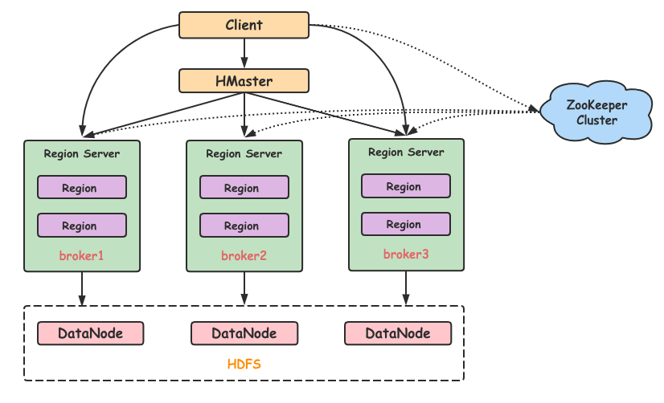

Hbase（官网）
1、简介
Hbase是bigtable的开源java版本。是建立在Hdfs之上，利用ZooKeeper进行管理，并提供了高可靠性、高性能、列存储、可伸缩、实时读写NoSql的数据库系统
2、Hbase的核心概念
（1）Hmaster
- 是 HBase 的主控节点，负责管理 RegionServer 的分配和协调
- 会进行 Region 的负载均衡、Region 的分裂、元数据的管理等工作
（2）RegionServer
- 存放和管理本地 Region
- 读写HDFS，管理Table中的数据
- Client 从 HMaster 中获取元数据，找到 RowKey 所在的 RegionServer 进行读写数据
（3）ZooKeeper
- 存放整个 HBase集群的元数据以及集群的状态信息，确保集群中的HMaster和RegionServer之间的协调
- 协调服务，提供故障恢复、分布式同步和配置管理
（4）存储结构
- 表（Table）：HBase中的数据存储在表中，类似于传统关系型数据库中的表。每个表由多个行（row）和列（column）组成。表中的行通过行键（Row Key）来唯一标识。
- 行（Row）：行是表中的数据项，每一行都有一个唯一的标识符，称为行键（Row Key）。
- 列族（Column Family）：HBase中的列被组织成列族（Column Family），每个列族包含一组相关的列。在物理存储上，列族是HBase的基本存储单位，所有属于同一列族的列会存储在同一HFile文件中。
- 时间戳（Timestamp）：每次写入时，HBase会自动生成一个时间戳，表示数据的版本。HBase允许每个单元格存储多个版本的数据。通过设置时间戳，用户可以查询历史版本的数据。
- 单元格（Cell）: 单元格是HBase中最小的数据存储单位。每个单元格包含以下信息：行键（Row Key）、列族（Column Family）、列限定符（Column Qualifier）、时间戳（Timestamp）、数据值（Value）
3、使用minikube部署Hbase
（1）制作并向minikube中导入所需的镜像
- 我们可以使用dockerfile来制作所需镜像
docker build -f dockerfile_hbase -t hbase:latest .
- 如果出现拉取错误的问题，也可以选择直接导入实验所提供的打包好的镜像
docker load -i hbase.tar
- 然后向minikube中导入所需的镜像
minikube image load hbase:latest
- 进入minikube查看是否导入
minikube ssh
docker images
（2）使用hbase-single.yaml文件部署Hbase
kubectl apply -f hbase-single.yaml
- 查看pod状态，确认已正常运行
kubectl get pods
- 使用kubectl的本地端口转发功能来查看hbase的master和regionserver界面
kubectl port-forward svc/hbase-master 16010:16010
kubectl port-forward svc/hbase-master 16030:16030
- 在浏览器中输入下面的url链接以访问Hbase的webui

（3）测试Hbase的功能
- 进入hbase所在pod的bash，下面命令中的pod名称需替换为自己实际的hbase名称
kubectl exec -it hbase-6466f75bd-7mpmx -- bash
- 进入hbase的shell
hbase shell
- 创建一个表
create 'test_table', 'cf'
- 插入一些数据
put 'test_table', 'row1', 'cf:name', 'John'
put 'test_table', 'row2', 'cf:name', 'Alice'
put 'test_table', 'row3', 'cf:name', 'Bob'
put 'test_table', 'row4', 'cf:name', 'Charlie'
put 'test_table', 'row5', 'cf:name', 'David'
put 'test_table', 'row6', 'cf:name', 'Eva'
put 'test_table', 'row7', 'cf:name', 'Frank'
put 'test_table', 'row8', 'cf:name', 'Grace'
- 浏览整张表
scan 'test_table'
- HBase 的数据首先存储在 MemStore 中，当 MemStore 超过一定阈值时，会触发一个 flush 操作，将数据从 MemStore 写入磁盘并创建 HFile 文件。因此如果马上想要在hdfs上查看hbase存放的数据，需要在hbase的shell中手动进行flush操作
flush 'test_table'
- 进入Hadoop的webui查看,在浏览器使用下面的url链接访问Hadoop的webui
- 一般Hbse中建立的每个表对应的hfile文件会存放在目录/hbase/data/default/test_table下
- 进入这个一串数字的目录，可以看到下面的部分，cf文件夹就是我们刚刚所创建的表test_table的列族，进入这个cf目录，就能看到我们要找的hfile了
- 再回到命令行，退出hbase的shell，回到pod的bash中，下载这个hfile文件，下面命令中的两处数字串需要替换为自己实际的目录中的数字串
hdfs dfs -get /hbase/data/default/test_table/fb32269518c2633c442d3e9ea2cc035d/cf/88df3db91aaa414496d5d36bc08c65fd
- 由于镜像的环境比较简单，无法查看二进制文件，可以将它使用kubectl传到我们的wsl中，查看其中的内容
- 先回到我们的wsl中
exit
- 再使用kubectl复制文件，同样地，下面命令中数字串也需要替换为自己实际的目录中的数字串
kubectl cp hbase-6466f75bd-7mpmx:/opt/hadoop/88df3db91aaa414496d5d36bc08c65fd ./88df3db91aaa414496d5d36bc08c65fd
- 查看二进制Hfile文件内容，可以看到刚刚我们插入表中的数据以及Hfile文件的格式